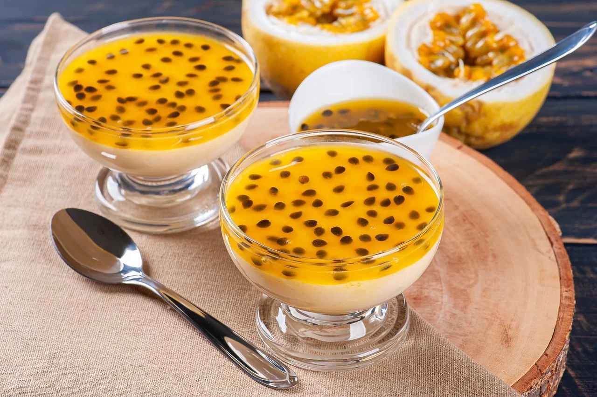

Maracujá Mousse

Description
Brazilian Maracujá Mousse, also known as Passion Fruit Mousse, is a popular and refreshing dessert in Brazil.
It has a history rooted in the country's love for tropical fruits and culinary creativity. The mousse showcases
the vibrant and tangy flavor of maracujá, or passion fruit, which is a cherished fruit in Brazil. The dessert is
made by combining the pulp of fresh passion fruit with condensed milk and whipped cream to create a light and airy
texture. The flavor profile is a delightful balance of sweet and tart, with the tropical notes of passion fruit shining
through. The mousse is often served chilled, garnished with fresh passion fruit seeds or a drizzle of passion fruit syrup,
offering a taste of Brazil's tropical paradise in every spoonful.
Ingredients
- 4-5 passion fruits (maracujá), depending on size
- 1 can (14 ounces) of sweetened condensed milk
- 1 cup of heavy cream
- 1 teaspoon of unflavored gelatin (optional)
- 2 tablespoons of sugar (optional, for extra sweetness)
- Fresh passion fruit seeds or syrup, for garnish (optional)
Steps
- Cut the passion fruits in half and scoop out the pulp using a spoon. Set aside some of the fresh seeds for garnish if desired.
- In a mixing bowl, combine the condensed milk with the passion fruit pulp. Stir until well mixed.
- If you prefer a firmer texture, you can dissolve the gelatin in 2 tablespoons of warm water and let
it sit for a few minutes. Then, gently warm the gelatin mixture in the microwave for a few seconds
until it becomes liquid. Add the gelatin to the condensed milk and passion fruit mixture, stirring well.
- In a separate bowl, whip the heavy cream until stiff peaks form.
- Gently fold the whipped cream into the condensed milk and passion fruit mixture. If desired, add sugar to taste and mix gently until everything is well incorporated.
- Pour the mixture into individual serving glasses or a large serving bowl. Smooth the top with a spatula.
- Refrigerate the mousse for at least 2 hours, or until set.
- Before serving, garnish the mousse with fresh passion fruit seeds or a drizzle of passion fruit syrup, if desired.
Return to homepage